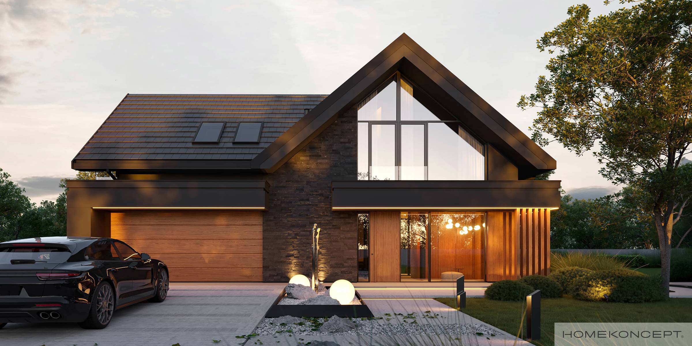
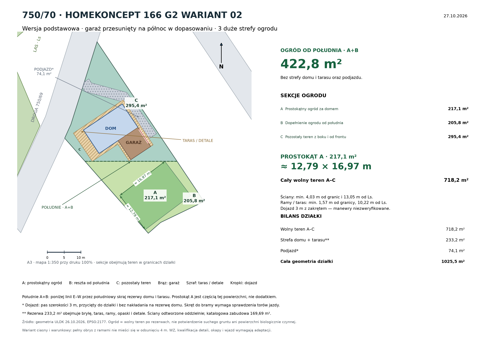

Około 12,79 × 16,97 m. Część południowego ogrodu, nie dodatkowa powierzchnia.
CHWASZCZYNO · DZIAŁKA 750/70Duży prostokąt ogrodu.
Duży prostokąt ogrodu.
Układ do adaptacji.
Przykładowe zagospodarowanie z projektem HOMEKONCEPT 166 G2 wariant 02 w wersji podstawowej. Sprawdzono przesuwanie garażu na północ i wydzielono jeden duży prostokąt ogrodu. Pozostały teren połączono w dwie większe strefy.
220508_5.0004.750/70Wariant warunkowyBez lustra.
Bez lustra.
Z innym dojazdem.
Ta bryła nie daje układu z garażem w północnym narożniku i prostym wjazdem od drogi jak w wariancie 130 A. Dopasowanie ścian jest ciasne, a droga do bramy zakręca. Pełne ramy i detale wychodzą poza obszar odsunięty o 4 m i zbliżają się do Ls na mniej niż 12 m.
Zobacz układ i ogród ↓
Poza rezerwą na dom, taras, ramy i schemat dojazdu.
Wolny teren po przyjętych rezerwach. Nie bilans PBC.
01
Wersja podstawowa wymaga kompromisu
Nie odbijano ani nie pomniejszano projektu. Poszukiwano dopasowań z najbardziej północnym położeniem środka garażu. W znalezionym układzie dom jest obrócony o około 123,75° względem osi wschodniej rzutu źródłowego, a brama kieruje się ku prawej granicy. Garaż pozostaje poniżej części mieszkalnej na rysunku; nie da się go tu pokazać w północnym narożniku bez zmiany przyjętych warunków.
4,03 mminimum od odtworzonych ścian do granic
13,05 mod ścian do poglądowego konturu Ls
1,57 mod pełnej rezerwy detali do granicy

Powiększ rzut ↗To wariant warunkowy, a nie potwierdzenie dopuszczalności budowy. Pełna rezerwa ram, tarasu i detali jest około 1,70 m od drogi i 10,22 m od Ls, mimo że odtworzone ściany mają ponad 4 m od granic i ponad 12 m od Ls. Jeżeli linia WZ lub wymagana odległość od lasu obejmuje te wystające elementy, ten układ nie spełnia przyjętego warunku. Ich kwalifikację i ewentualną adaptację musi rozstrzygnąć architekt.
Schemat dojazdu
Pas 3 m z zakrętem do bramy
Trasa mieści się w granicach parceli i omija odtworzone ściany, ale wymaga skrętu oraz przejazdu przy ramie i detalach. Nie sprawdzono torów kół, promieni skrętu, prześwitów pod belkami ani wygody wjazdu. Potrzebny jest projekt manewrowania dla konkretnego samochodu.
Do sprawdzenia
Ramy i zadaszenia a odsunięcia
W obliczeniach rozdzielono główne ściany i drugorzędne elementy widoczne w obrysie autora. Nie uznano automatycznie, że wszystkie ramy podlegają regule dla okapów lub tarasów. Nie potwierdzono także zasięgu kondygnacji nad parterem ani właściwego reżimu przeciwpożarowego.
02
Jeden prostokąt i dwie większe strefy
Strefa A to prostokąt około 12,79 × 16,97 m, czyli 217,1 m². Leży za strefą domu i tarasu. B łączy cały pozostały ogród od południa, a C pozostały teren z boku i przed domem. Nie dzielono reszty na małe paski.
| Strefa | Zakres | Powierzchnia |
|---|---|---|
| A | Prostokątny rdzeń ogrodu | 217,1 m² |
| B | Dopełnienie ogrodu od południa | 205,8 m² |
| C | Pozostały teren z boku i od frontu | 295,4 m² |
| Ogród od południa · A+B | 422,8 m² | |
| Cały wolny teren · A–C | 718,2 m² | |
Południe A+B wyznaczono poniżej linii E–W przez najbardziej południowy punkt rezerwy domu i tarasu. Prostokąt A wyszukano numerycznie w tej części działki, sprawdzając jego pełne zawieranie. Jest dużym znalezionym prostokątem, nie dowodem matematycznie największej powierzchni dla każdego możliwego ustawienia domu.
| Przeznaczenie | Powierzchnia |
|---|---|
| Wolny teren A–C | 718,2 m² |
| Rezerwa domu, tarasu, ram i detali | 233,2 m² |
| Schemat dojazdu poza rezerwą domu | 74,1 m² |
| Razem · geometria parceli | 1025,5 m² |
Sumy z wartości niezaokrąglonych; przy sumowaniu etykiet możliwa różnica 0,1 m². Wolny teren nie potwierdza suchego i nasłonecznionego ogrodu ani powierzchni biologicznie czynnej. Dodatkowe chodniki i instalacje mogą go zmniejszyć.
03
Projekt i niewielki zapas do limitu
| Projekt | HOMEKONCEPT 166 G2 wariant 02 |
|---|---|
| Wersja | Podstawowa · bez lustra |
| Powierzchnia zabudowy według karty | 169,69 m² |
| Udział w ofertowych 1026 m² | około 16,54% |
| Przyjęty limit · 17% | 174,42 m² |
| Zapas | 4,73 m² |
| Gabaryt karty projektu | 16,14 × 17,75 m |
| Obszar po wcześniejszych odsunięciach 4 m | około 521,46 m² |
Karta internetowa i rysunki koncepcyjne różnią się o kilka centymetrów. PDF szczegółowy pokazuje 17,80 m, a do rezerwy przyjęto konserwatywnie do 17,88 m z odczytu wektorowego. Kalibrację szerokości oparto na 16,14 m. Nie pomniejszano obrysu, aby uzyskać dopasowanie; aktualny rysunek do adaptacji powinien potwierdzić projektant.
Pole odtworzonych ścian parteru nie zastępuje katalogowej powierzchni zabudowy 169,69 m². Ta ostatnia może obejmować inne rzuty kondygnacji i elementy wymagające sprawdzenia w dokumentacji.
04
Założenia, źródła i następny krok
Przyjęto wcześniejszy scenariusz dla 750/70: 17% zabudowy, 4 m od drogi i pozostałych granic do głównych ścian oraz 12 m od poglądowego Ls do ścian. Dla rezerwy detali sprawdzono jedynie zachowanie ponad 1,5 m od granic, nie przesądzając zgodności prawnej. Pełnej WZ z mapą nie udostępniono. Kontur Ls z rastra ma dokładność około 1–3 m.
Dane i wizualizacja wersji podstawowej: HOMEKONCEPT, odczyt 27.10.2026. Na obrazie zachowano podpis autora.
Do modelu wykorzystano wyłącznie lewy obrys, oznaczony jako wersja podstawowa. Ramy i tarasy pokazano oddzielnie od odtworzonych ścian; bez publikowania pełnych rysunków technicznych w Atlasie.
Kontrola położenia garażu, wejścia i tarasu. Rysunek koncepcyjny nie jest dokumentacją techniczną.
Geometria z 26.10.2026, obliczenia EPSG:2177. Pole 1025,54 m²; limit procentowy liczony od ofertowych 1026 m². Opracowanie i publikacja wariantu 27.10.2026.
Przed wyborem tego projektu: potrzebne są pełna WZ, aktualne gabaryty wszystkich kondygnacji i ram, kontrola odległości od lasu oraz projekt wjazdu z torami jazdy. Wynik jest przykładem warunkowym; wariant z prostym wjazdem nadal można obejrzeć na osobnej podstronie HOMEKONCEPT 130 A.